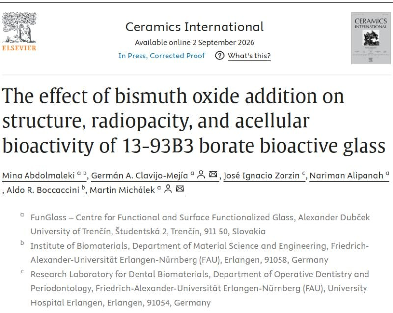
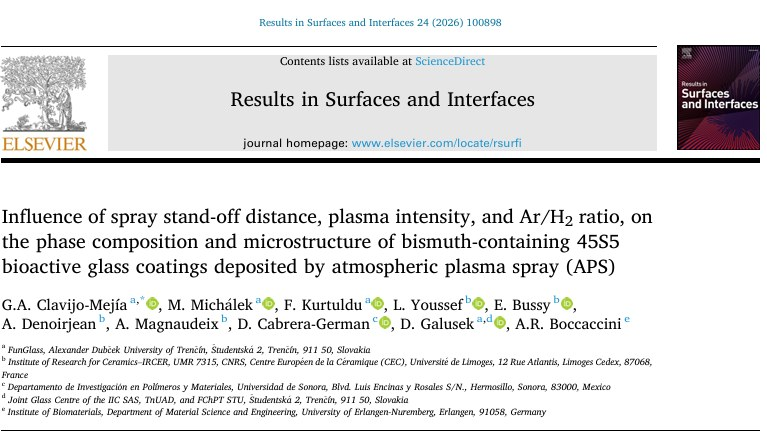
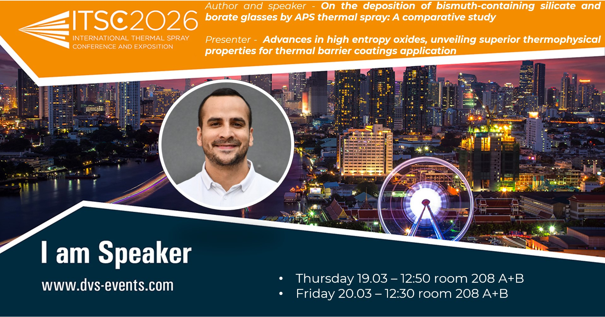
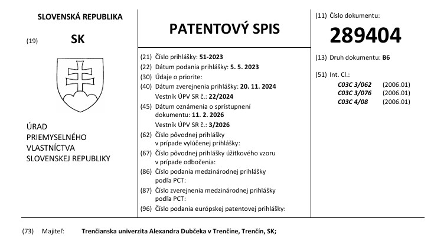
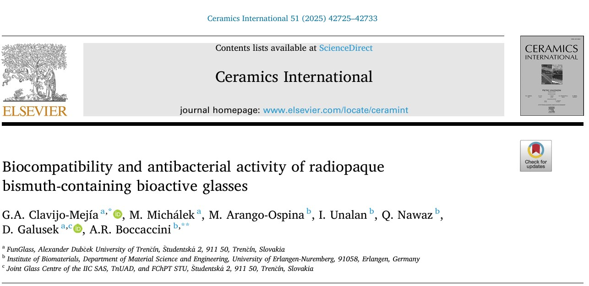
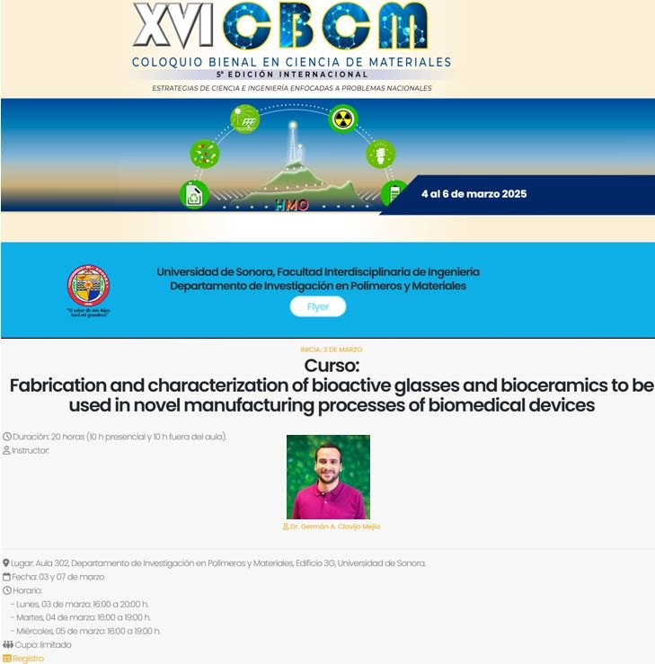
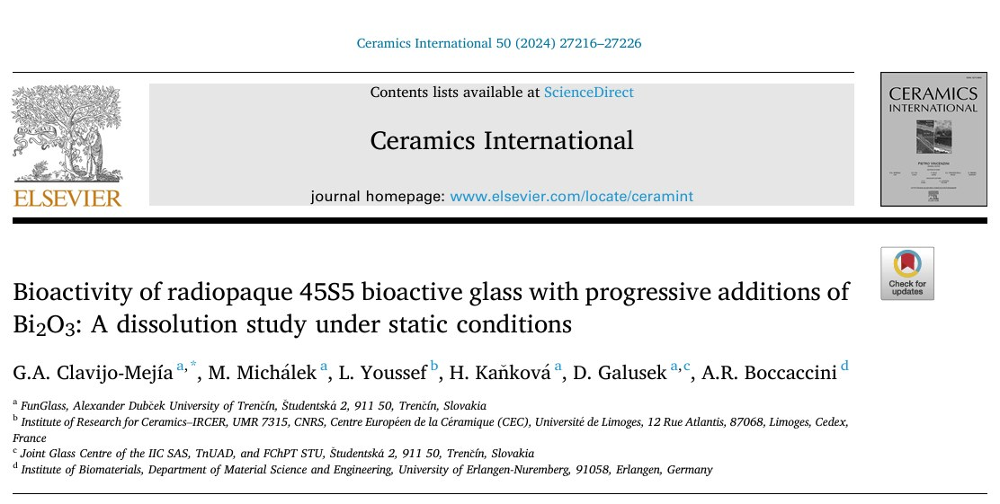

2026Welcome, DanielBienvenido, Daniel
Daniel Souza Sandes joins RADIOBIOCOATS in October 2026 as a double-degree Ph.D. candidate between FunGlass, Alexander Dubček University of Trenčín, and IRCER, Université de Limoges. His thesis, Radiopaque, bioactive and antibacterial plasma-sprayed coatings for implantable biomedical devices, is co-supervised by Dr. Germán A. Clavijo-Mejía, Dr. Martin Michálek, Dr. Amandine Magnaudeix and Dr. Laurène Youssef.Daniel Souza Sandes se une a RADIOBIOCOATS en octubre de 2026 como doctorando en doble titulación entre FunGlass, Universidad Alexander Dubček de Trenčín, y el IRCER, Universidad de Limoges. Su tesis, Recubrimientos radiopacos, bioactivos y antibacterianos proyectados por plasma para dispositivos biomédicos implantables, está codirigida por el Dr. Germán A. Clavijo-Mejía, el Dr. Martin Michálek, la Dra. Amandine Magnaudeix y la Dra. Laurène Youssef.

September 2026Borate glass paper publishedPublicado el artículo sobre el vidrio de borato
Ceramics International published the study on bismuth oxide in 13-93B3 borate bioactive glass.Ceramics International publicó el estudio sobre el óxido de bismuto en el vidrio bioactivo de borato 13-93B3. DOI
August 2026RADIOBIOCOATS webinarWebinar de RADIOBIOCOATS
Dr. Germán A. Clavijo-Mejía presented the project to colleagues from the Institute of Biomaterials, FAU Erlangen-Nürnberg, in an online webinar.El Dr. Germán A. Clavijo-Mejía presentó el proyecto a colegas del Instituto de Biomateriales de la FAU Erlangen-Núremberg en un webinar en línea.

August 2026Plasma spray study publishedPublicado el estudio de proyección por plasma
Results in Surfaces and Interfaces published the first systematic study of APS parameters for bismuth-containing 45S5 coatings.Results in Surfaces and Interfaces publicó el primer estudio sistemático de parámetros APS para recubrimientos 45S5 con bismuto. DOI

March 2026Two talks at ITSC 2026Dos ponencias en ITSC 2026
Dr. Germán A. Clavijo-Mejía presented RADIOBIOCOATS at the International Thermal Spray Conference in Bangkok.El Dr. Germán A. Clavijo-Mejía presentó RADIOBIOCOATS en la International Thermal Spray Conference de Bangkok. FunGlass

February 2026Slovak patent grantedConcedida la patente eslovaca
The Industrial Property Office of the Slovak Republic granted patent SK 289404 B6, Radiopaque bioactive glass with added bismuth. The inventors are Dr. Germán A. Clavijo-Mejía, Dr. Martin Michálek and Prof. Dušan Galusek, and the patent belongs to Alexander Dubček University of Trenčín.La Oficina de Propiedad Industrial de la República Eslovaca concedió la patente SK 289404 B6, Vidrio bioactivo radiopaco con adición de bismuto. Los inventores son el Dr. Germán A. Clavijo-Mejía, el Dr. Martin Michálek y el Prof. Dušan Galusek, y la patente pertenece a la Universidad Alexander Dubček de Trenčín.
 June 2025
June 2025Talk and poster award at EORS 2025Ponencia y premio de póster en EORS 2025
The team presented radiopaque APS coatings in Davos, and Daniela Jaramillo, M.Sc., won the best student poster award with her work on bismuth-doped mesoporous bioactive glass nanoparticles for bone void filling.El equipo presentó los recubrimientos APS radiopacos en Davos, y Daniela Jaramillo, M.Sc., ganó el premio al mejor póster de estudiante con su trabajo sobre nanopartículas de vidrio bioactivo mesoporoso dopadas con bismuto para el relleno de defectos óseos. FunGlass

2025Biocompatibility paper publishedPublicado el artículo de biocompatibilidad
Ceramics International published the study on the biocompatibility and antibacterial activity of radiopaque bismuth-containing bioactive glasses. DOICeramics International publicó el estudio sobre la biocompatibilidad y la actividad antibacteriana de los vidrios bioactivos radiopacos con bismuto. DOI

March 2025Invited talk and course in SonoraCharla invitada y curso en Sonora
Dr. Germán A. Clavijo-Mejía gave an invited talk at the XVI Biennial Colloquium on Materials Science (CBCM 2025) and taught the course Fabrication and characterization of bioactive glasses and bioceramics to be used in novel manufacturing processes of biomedical devices at Universidad de Sonora, Hermosillo.El Dr. Germán A. Clavijo-Mejía dio una charla invitada en el XVI Coloquio Bienal en Ciencia de Materiales (CBCM 2025) e impartió el curso Fabrication and characterization of bioactive glasses and bioceramics to be used in novel manufacturing processes of biomedical devices en la Universidad de Sonora, Hermosillo.
2024Project approvedProyecto aprobado
RADIOBIOCOATS ranked first in the R2 category of the call Scholarships for Excellent Researchers R2–R4 of the Recovery and Resilience Plan for Slovakia.RADIOBIOCOATS quedó en primer lugar en la categoría R2 de la convocatoria Becas para investigadores excelentes R2–R4 del Plan de Recuperación y Resiliencia de Eslovaquia. FunGlass

2024First bismuth glass paper publishedPublicado el primer artículo sobre vidrio con bismuto
Ceramics International published the first study of the research line: the bioactivity of radiopaque 45S5 bioactive glass with progressive additions of Bi2O3. DOICeramics International publicó el primer estudio de la línea de investigación: la bioactividad del vidrio bioactivo radiopaco 45S5 con adiciones progresivas de Bi2O3. DOI